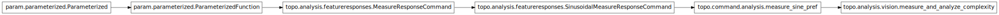

topo.analysis.vision¶

Module¶
Vision-specific analysis functions.
$Id: featureresponses.py 7714 2008-01-24 16:42:21Z antolikjan $
- class topo.analysis.vision.measure_and_analyze_complexity(**params)[source]¶
Bases: topo.command.analysis.measure_sine_pref
Macro for measuring orientation preference and then analyzing its complexity.
- param List static_parameters (bounds=(0, None), constant=False, default=[‘scale’, ‘offset’], instantiate=True, pickle_default_value=True, precedence=None, readonly=False)
- List of names of parameters of this class to pass to the pattern_presenter as static parameters, i.e. values that will be fixed to a single value during measurement.
- param Integer num_hue (allow_None=False, bounds=(1, None), constant=False, default=1, inclusive_bounds=(True, True), instantiate=False, pickle_default_value=True, precedence=None, readonly=False)
- Number of hues to test; set to 1 to disable or e.g. 8 to enable.
- param Integer num_direction (allow_None=False, bounds=(0, None), constant=False, default=0, inclusive_bounds=(True, True), instantiate=False, pickle_default_value=True, precedence=None, readonly=False)
- Number of directions to test. If nonzero, overrides num_orientation, because the orientation is calculated to be perpendicular to the direction.
- param Boolean weighted_average (allow_None=False, bounds=(0, 1), constant=False, default=True, instantiate=False, pickle_default_value=True, precedence=None, readonly=False)
- Whether to compute results using a weighted average, or just discrete values. A weighted average can give more precise results, without being limited to a set of discrete values, but the results can have systematic biases due to the averaging, especially for non-cyclic parameters.
- param Callable pattern_generator (constant=False, default=<SineGrating SineGrating00046>, instantiate=True, pickle_default_value=True, precedence=None, readonly=False)
- Pattern to be presented on the inputs.
- param HookList metafeature_fns (bounds=(0, None), constant=False, default=[<class ‘topo.analysis.featureresponses.contrast2scale’>, <class ‘topo.analysis.featureresponses.direction2translation’>], instantiate=True, pickle_default_value=True, precedence=None, readonly=False)
- Metafeature_fns is a hooklist, which accepts any function, which applies coordinated changes to a set of inputs based on some parameter or feature value. Can be used to present different patterns to different inputs or to control complex features like contrast.
- param Number scale (allow_None=False, bounds=None, constant=False, default=0.3, inclusive_bounds=(True, True), instantiate=False, pickle_default_value=True, precedence=None, readonly=False)
- Multiplicative strength of input pattern.
- param Integer num_orientation (allow_None=False, bounds=(1, None), constant=False, default=4, inclusive_bounds=(True, True), instantiate=False, pickle_default_value=True, precedence=None, readonly=False)
- Number of orientations to test.
- param Integer num_speeds (allow_None=False, bounds=(0, None), constant=False, default=4, inclusive_bounds=(True, True), instantiate=False, pickle_default_value=True, precedence=None, readonly=False)
- Number of speeds to test (where zero means only static patterns). Ignored when num_direction=0.
- param Integer num_ocularity (allow_None=False, bounds=(1, None), constant=False, default=1, inclusive_bounds=(True, True), instantiate=False, pickle_default_value=True, precedence=None, readonly=False)
- Number of ocularity values to test; set to 1 to disable or 2 to enable.
- param List outputs (bounds=(0, None), constant=False, default=[], instantiate=True, pickle_default_value=True, precedence=None, readonly=False)
- Name of output sources supplied to metadata_fns to filter out desired output.
- param Callable pattern_response_fn (constant=False, default=pattern_response(), instantiate=False, pickle_default_value=True, precedence=None, readonly=False)
- Callable object that will present a parameter-controlled pattern to a set of Sheets. Needs to be supplied by a subclass or in the call. The attributes duration and apply_output_fns (if non-None) will be set on this object, and it should respect those if possible.
- param List inputs (bounds=(0, None), constant=False, default=[], instantiate=True, pickle_default_value=True, precedence=None, readonly=False)
- Name of input supplied to the metadata_fns to filter out desired input.
- param ClassSelector preference_fn (allow_None=False, constant=False, default=<DSF_WeightedAverage DSF_WeightedAverage00047>, instantiate=True, pickle_default_value=True, precedence=None, readonly=False)
- Function that will be used to analyze the distributions of unit responses.
- param List frequencies (bounds=(0, None), constant=False, default=[2.4], instantiate=True, pickle_default_value=True, precedence=None, readonly=False)
- Sine grating frequencies to test.
- param Parameter durations (constant=False, default=[1.0], instantiate=False, pickle_default_value=True, precedence=None, readonly=False)
- Times after presentation begins at which to record a measurement.
- param Number max_speed (allow_None=False, bounds=(0, None), constant=False, default=0.0833333333333, inclusive_bounds=(True, True), instantiate=False, pickle_default_value=True, precedence=None, readonly=False)
- The maximum speed to measure (with zero always the minimum).
- param String measurement_prefix (allow_None=False, constant=False, default=, instantiate=False, pickle_default_value=True, precedence=None, readonly=False)
- Optional prefix to add to the name under which results are stored as part of a measurement response.
- param Number offset (allow_None=False, bounds=None, constant=False, default=0.0, inclusive_bounds=(True, True), instantiate=False, pickle_default_value=True, precedence=None, readonly=False)
- Additive offset to input pattern.
- param Integer num_disparity (allow_None=False, bounds=(1, None), constant=False, default=1, inclusive_bounds=(True, True), instantiate=False, pickle_default_value=True, precedence=None, readonly=False)
- Number of disparity values to test; set to 1 to disable or e.g. 12 to enable.
- param Callable preference_lookup_fn (constant=False, instantiate=True, pickle_default_value=True, precedence=None, readonly=False)
- Callable object that will look up a preferred feature values.
- param String subplot (allow_None=False, constant=False, default=Orientation, instantiate=False, pickle_default_value=True, precedence=None, readonly=False)
- Name of map to register as a subplot, if any.
- param Integer num_phase (allow_None=False, bounds=(1, None), constant=False, default=18, inclusive_bounds=(True, True), instantiate=False, pickle_default_value=True, precedence=None, readonly=False)
- Number of phases to test.
- topo.analysis.vision.compute_ACDC_orientation_tuning_curves(full_matrix, curve_label, sheet)[source]¶
This function allows and alternative computation of orientation tuning curve where for each given orientation the response is computed as a maximum of AC or DC component across the phases instead of the maximum used as a standard in Topographica
- topo.analysis.vision.analyze_complexity(full_matrix, simple_sheet_name, complex_sheet_name, filename=None)[source]¶
Compute modulation ratio for each neuron, to distinguish complex from simple cells.
Uses full_matrix data obtained from measure_or_pref().
If there is a sheet named as specified in simple_sheet_name, also plots its phase preference as a scatter plot.